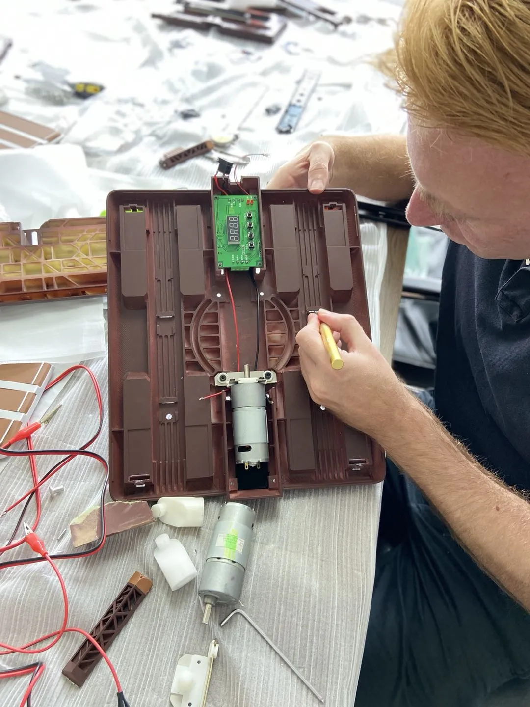
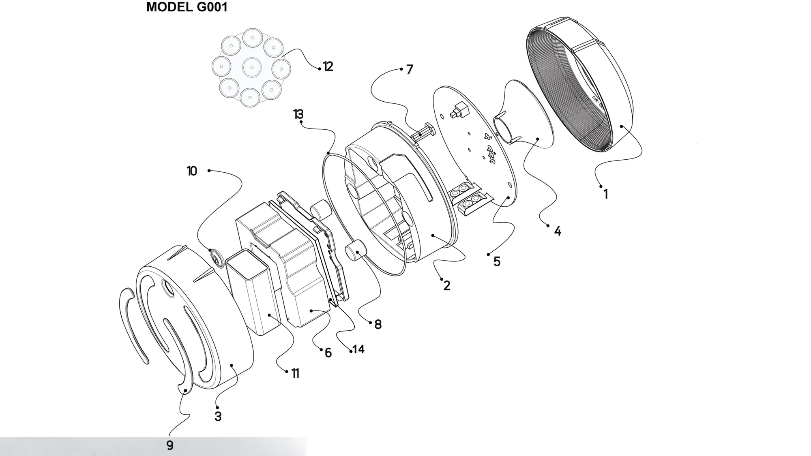

Componentes
Cada componente llega de proveedores aprobados y se verifica frente a su especificación antes de entrar en producción.
Calidad y cumplimiento
Momentum Systems S.L. es el fabricante legal de las Instaflash V16 y el titular de sus certificados.
Responsabilidad
Momentum define el producto, dirige la ingeniería, gestiona la certificación y mantiene la conformidad de la producción. La fabricación física se realiza en la planta del grupo bajo nuestro control de calidad.
Cada cambio de componente, material, proceso o lugar de fabricación pasa por nuestra aprobación formal previa.
Ver la estructura del grupo
Conformidad de la producción
Cada componente llega de proveedores aprobados y se verifica frente a su especificación antes de entrar en producción.
Placa electrónica, LED y soldadura por ultrasonidos se controlan durante el montaje.
Fotometría, destello, comunicación con la plataforma, autodiagnóstico, sellado, caída y trazabilidad.
Solo Momentum libera los lotes al mercado. Un defecto crítico bloquea el lote completo.
Ensayos y normas
| Ámbito | Referencia |
|---|---|
| Señal V-16 conectada | RD 159/2021 modificado por RD 1030/2022 |
| Fotometría | Reglamento CEPE/ONU n.º 65 |
| Equipos radioeléctricos | Directiva 2014/53/UE (RED) · RD 188/2016 |
| Compatibilidad y espectro | EN 301 489-1 · EN 301 908-1 |
| Exposición a campos electromagnéticos | EN 62479:2010 |
| Sustancias peligrosas | RoHS II |
| Conectividad | Plataforma DGT 3.0 |
La conformidad de la producción se verifica cada dos años en laboratorio acreditado ISO/IEC 17025, conforme a la instrucción MOV 2024/06 de la DGT.
Trazabilidad
Registramos por lote los números de serie, la conectividad asignada, la fecha de fabricación y la caducidad. El almacén rota por fecha de caducidad de la conectividad para que cada baliza llegue con el máximo servicio.

Política de calidad
Mejora continua y excelencia en cada decisión. Diseño, ingeniería radioeléctrica en España e ingeniería fotométrica en China trabajan sobre las mismas especificaciones aprobadas.
